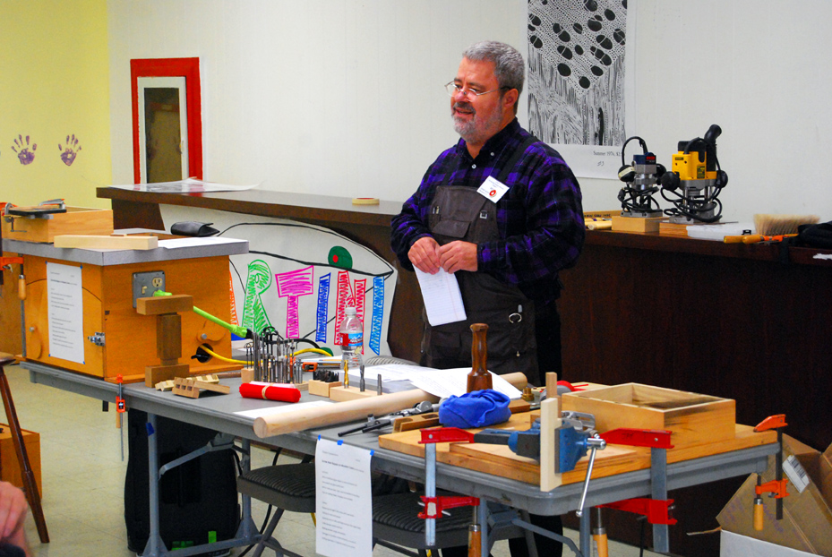
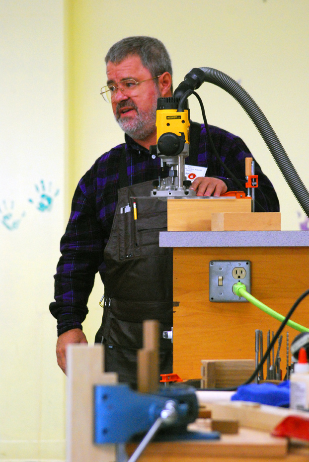
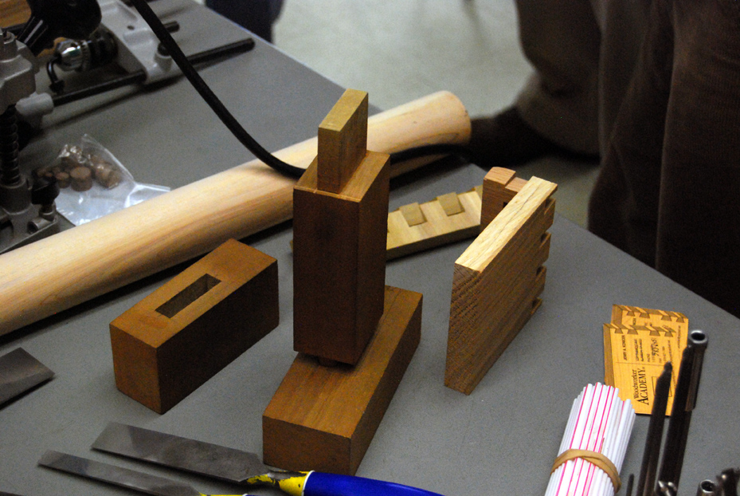
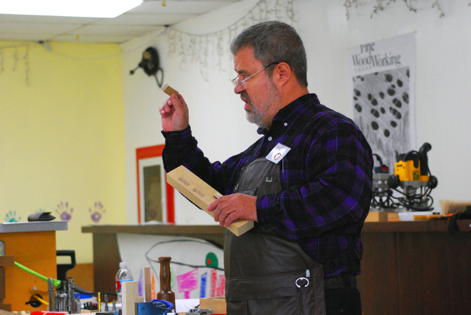
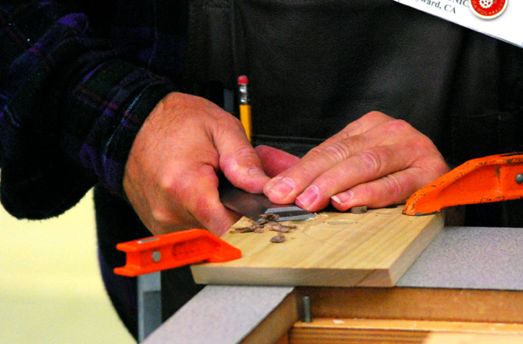

Clock-Related Wood Repairs by Jerry Konicek
This is an archived report. Meeting places, times and people have changed since it was written. See Meetings for current details.

Today’s presentation is given by Jerry Konicek on the most common clock-related wood repairs. Jerry is a master woodworker who has taught woodworking for many years. Jerry demonstrates the use of wood plugs to properly repair common faults in wooden clock cases.
Jerry starts the presentation with a common clock case repair: the broken hinge. A common fault is one or more of the screws holding the hinge are stripped so the screw will not hold the hinge in place. Don’t use toothpicks and glue to repair a damaged screw hole. The next time the screw is removed, the toothpicks will fall out and the poorly done job will have to be repeated.
The toothpicks will not hold because the grain of the toothpicks is perpendicular to the grain of the case. This joint will loosen up with changes in humidity since the case and toothpicks are expanding and contracting against each other. This movement will break the glue causing the repair to fail.

To repair the broken wood behind the hinge, Jerry demonstrates how to cut a mortise. This mortise is a rectangular hole that is square to the surface that holds the hinge. Later, the mortise will be filled with a plug Jerry creates during the demonstration. This plug will provide fresh wood that will better hold the screws. This repair can be invisible if the mortise is behind the hinge.
Jerry’s do’s and don’ts:
- Don’t glue in screws! This will make a horrible mess for the next person who works on the clock case.
- Forstner bits make a square bottom for an additional glue surface. More glue surfaces make for a stronger joint.
- Toothpicks are end-grain to side grain joints; these always fail.
- Don’t screw into end-grain, the screw will just pull out. The screw can also split the wood.
- A sweet fitting joint can be assembled and disassembled without a fight.
- Practice each operation! Jerry will do some new operations up to five times to reach perfection before performing the operation on the real project.
- On the marked sample wood piece, drill in clean wood, then go back and drill out the webs between the holes drilled in the first place. This sounds more complex that it really is. Drill the first hole, then drill the next without overlapping the previous holes. Once the length of the mortise is filled with newly-drilled holes, drill out the webs between the holes.
Jerry now tells us about a jig that no longer is in production: the Lock Wizard. This is great for replacing broken-out hinge joints. I mention this jig since I suspect a used one can be found on a common auction site.
To cut the mortise with the plunge router, he uses the most common router bit: the double flute made from high speed steel. This bit produces nice, clean sides and bottoms for great side grain to side grain glue joints.

To hold flat items together with little mess, Jerry uses Lathe Turners double stick tape from WoodCraft. This tape releases without leaving glue behind.
Jerry now connects a shop vacuum that turns itself on when the power tool goes on.
To use a template, like the Lock Wizard, Jerry mounts a collar on the router. The collar provides a repeatable space between the template and the fast rotating cutting tool, in this case, the straight cutting double flute bit.
One of the golden rules of woodworking is to make multiple light cuts. To cut this mortise, Jerry takes 3 to 4 passes with the router set to high speed for the cleanest cut.
Using some sort of vacuum system is great, if not mandatory. Otherwise the electro-statically charged cut-wood fibers will fly and stick everywhere.
Clock cases can be plugged from both sides of the case with different methods for a clean look on both sides. A rectangular plug on the back side will prevent a screw from pulling out the repair. This is best used for screw holes that hold the movement, since the movement mounting holes are subject to considerable torque each time the clock is wound.
After either the drill plus doweling jig, or the router method, the mortise is a rectangle with rounded inside corners. There are tools that advertise the ability to cut square corners, but Jerry has found these to be wanting. Instead of spending good money on one power tool,
Each pass with the chisel Jerry takes is paper thin which follows the multiple light passes rule. He is cutting straight down into the rounded corner to square it up. After several passes, the corner is now both square and cut to the mark on the work piece. Jerry uses his square gage to check that all four mortise faces are square to the top.

When the mortise is cut with a drill, mark the high spots with a pencil. The cuts will be so thin that the cut will not take the mark off on the first pass.
Again, use the square to be sure the sides are straight.
If there is a pencil mark near the top of one of the mortise sides, we have an angle that can be fixed on the next chisel cut.
Use the flat back of the chisel to extend the line on the top. Put an end of the chisel in the bottom and rotate the chisel to increase the line on the top.
Cut out the material, do not pry with your cutting tools. Do not rush, or you can crush the wood fiber and have a buggered opening.

Plug making
Jerry now demonstrates how to make a plug that will fit into the mortise that was just finished.
Make the plug a bit tall. Jerry marks the wood that will become the plug with a marking gage. These marks will guide the saw.
Use a parrot vise. This vise pivots until clamped. It is about $45. He is cutting with a crosscut Japanese saw. Jerry has not cut the plug off the stock yet. Jerry cuts the plug slightly fat so he can trim it to fit the mortise.
If the plug is tapered, with the wide chisel, rotate light cuts to fix taper. Check the width and length to fit in hole. Cut, try fit, repeat if needed. Once the mortise is cut, and the sides are square, we cut the plug to fit the mortise. It is more important to get a sweet fit than to worry about exact measurements. We use a marking gauge to get the best starting point, and then carefully trim the plug until we get the fit we want.
Jerry takes us to the next step in the process: shortening the plug. The wood Jerry chose is very hard white oak. We do not have to cut the entire width in one slice. Slice 1/8in, the next slice to extend the cut, continue until the plane of the cut extends to the end of the plug.
Remember: sandpaper rounds things, chisels flatten things.
The new wood will hold new screws much better than the old damaged wood.
The demo was well received by the 27 guests and members who were present for the presentation.